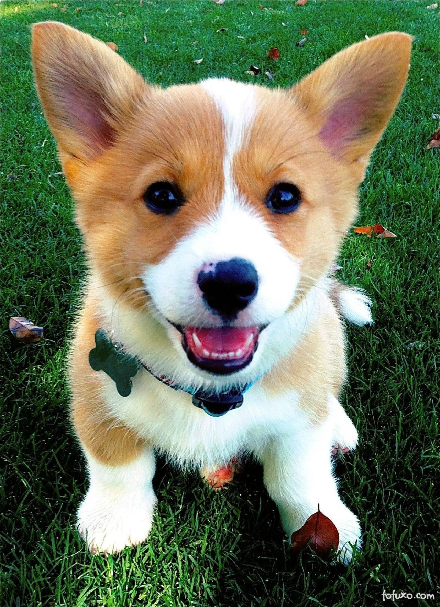
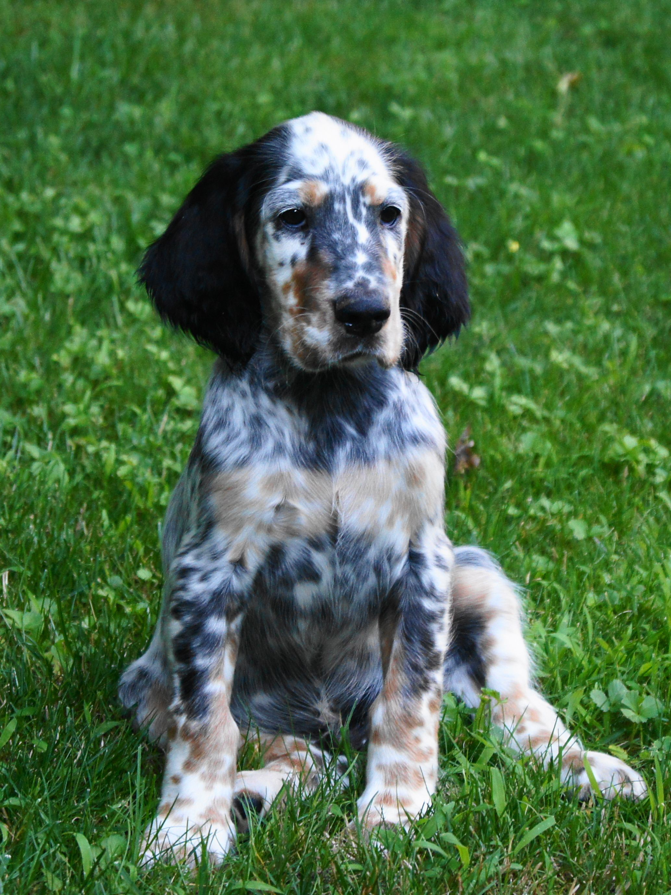

The Golden Retriever is a Scottish breed of retriever dog of medium size. It is characterised by a gentle and affectionate nature and a striking golden coat. It is commonly kept as a pet and is among the most frequently registered breeds in several Western countries. It is a frequent competitor in dog shows and obedience trials; it is also used as a gun dog (a type of hunting dog for soft-mouthed retrieving of fowl) and may be trained for use as a guide dog.
The Pembroke Welsh Corgi (/ˈkɔːrɡi/; Welsh for "dwarf dog"[a]) is a cattle herding dog breed that originated in Pembrokeshire, Wales.[1] It is one of two breeds known as a Welsh Corgi, the other being the Cardigan Welsh Corgi. Pembroke Welsh Corgis descended from the Spitz family of dogs.
The English Setter is a medium-size breed of dog. It is part of the setter group, which includes the red Irish Setters, Irish Red and White Setters, and black-and-tan Gordon Setters. The mainly white body coat is of medium length with long silky fringes on the back of the legs, under the belly and on the tail. The coat features flecks of colour (known as ticking), and the different colour varieties are referred to as belton.
